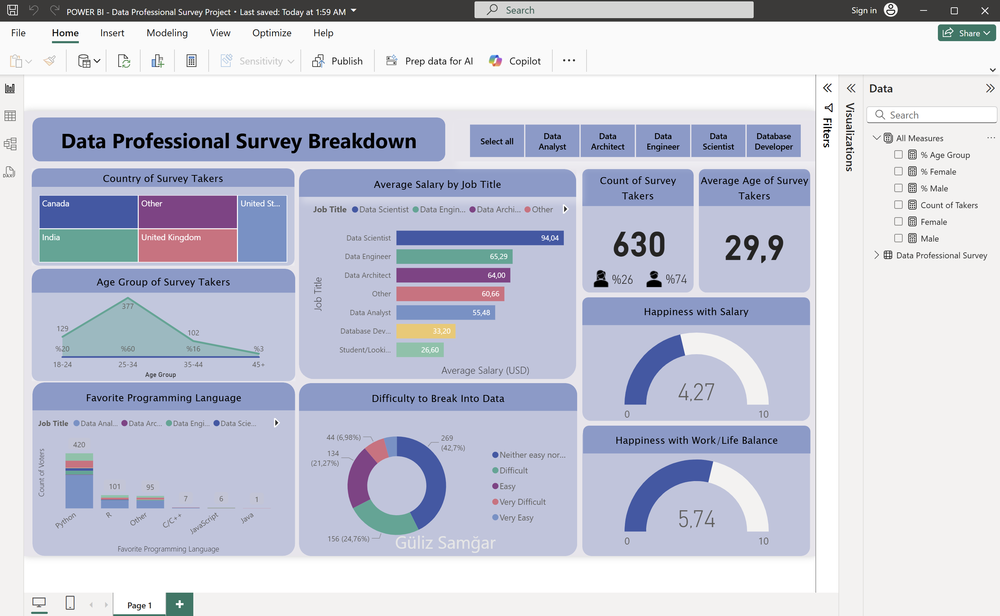

Data Professional Survey Dashboard: Veriye Dayalı Kariyer Analizi
Hedef
Veri Uzmanları Anketi projesinin amacı, dünya çapında veri profesyonelleri hakkında toplanan anket verilerini analiz ederek önemli içgörüler elde etmektir. Çalışanların kariyer değişiklikleri, maaş aralıkları, sektör tercihleri, iş memnuniyeti ve teknik becerileri gibi faktörler analiz edilerek, veri dünyasındaki trendler ve fırsatlar incelenmektedir. Elde edilecek bilgiler, kurumların veri odaklı stratejik karar süreçlerine katkı sağlayarak genel performansı iyileştirmesine yardımcı olacaktır.
GitHub'dan indirin!Arka Plan Bilgisi (Veri Seti Bilgisi)
Veri seti, dünya genelinden 630 veri uzmanının cevaplarından oluşan bir anket verisini içerir. Kayıtlarda katılımcının yaşı, cinsiyeti, ülkesi, eğitim durumu, iş unvanı, yıllık maaş aralığı, tercih ettiği programlama dilleri, iş tatmin derecesi ve iş-yaşam dengesi memnuniyeti gibi çeşitli bilgiler bulunur. Bu özellikler, veri uzmanlarının demografik profillerini ve mesleki eğilimlerini ayrıntılı olarak analiz etmemize imkân tanır.
Kurulum
Projeye başlamadan önce Power BI içindeki Power Query aracı kullanılarak kapsamlı bir veri temizleme ve hazırlık süreci gerçekleştirildi. Analiz için gerekli olmayan sütunlar (örneğin tarih, tarayıcı, işletim sistemi bilgileri) veri setinden kaldırıldı. Eksik veriler kontrol edildi ve veri tiplerinin uygunluğu sağlandı.
Verilerin daha anlamlı ve görselleştirilebilir hale gelmesi amacıyla şu düzenlemeler yapıldı:
- İş Unvanı Segmentasyonu: Katılımcıların iş unvanları farklı şekilde yazılmış olsa da (örneğin "Analyst", "Fianance Analyst", "Business Analyst" vb.), analiz kolaylığı sağlamak amacıyla benzer roller gruplandırıldı. "Other" seçeneği üzerinden girilen tüm farklı unvanlar da tek bir “Other” grubu altında birleştirildi.
- Favori Program Dilleri: Katılımcıların en çok sevdikleri programlama dili veya araçları belirtmeleri için açık uçlu "Other" seçeneği mevcuttu. Ancak veri çeşitliliği yüksek olduğundan, bu girişler de tek bir "Other" grubu altında birleştirildi.
- Maaş Aralıkları: Metinsel olarak belirtilen maaş aralıkları, ortalama sayısal değerlere dönüştürüldü.
- Ülke Dağılımı: Katılımcılar, mevcut listede olmayan ülkeleri de "Other" seçeneğiyle manuel olarak girdi. Bu farklı ülke isimleri analiz açısından gruplanarak yine "Other" başlığı altında birleştirildi.

Resim 1. Temizlenmiş, dönüştürülmüş veri setinin görünümü
Bu adımlar, verinin analiz için uygun formatta olmasını sağlayarak elde edilen sonuçların güvenilirliğini artırmıştır.
Dashboard Design and Creation.
With the processed data, I created a HR analytics dashboard that presents key insights on employee attrition. The dashboard includes charts showing attrition rates by department, age, salary, and job satisfaction, providing a comprehensive view of factors contributing to attrition within the company. These visualizations can help inform HR decision-making and guide targeted efforts to reduce attrition and retain valuable employees.
Fig 2. This image shows the HR Analytics Dashboard.
In addition to creating the charts mentioned earlier, I also added slicers to the HR analytics dashboard. These slicers allow the user to filter the data by various criteria such as department, job role, and education level. This provides a more dynamic and interactive user experience, allowing the user to explore the data in greater detail and gain deeper insights.
Sonuç
Power BI kullanılarak hazırlanan Veri Uzmanları Anketi Dashboard'u, veri profesyonellerinin profili hakkında bilgiye dayalı kararlar almayı kolaylaştıran güçlü bir araçtır. Bu proje, veri analizi ve görselleştirme konusundaki yetkinliklerimi ortaya koymaktadır. Elde ettiğim bu deneyimler, çeşitli sektörlerdeki organizasyonların veriye dayalı karar almasına ve hedeflerine ulaşmasına katkı sağlayacak becerileri kapsamaktadır.